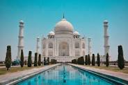
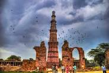
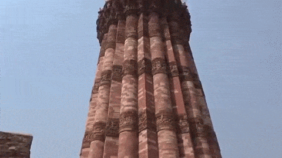

| Monument |
Image |
Description |
Link |
| Taj Mahal |


|
The Taj Mahal is an ivory-white marble mausoleum located in Agra, India. It was built by the Mughal emperor Shah Jahan in memory of his wife, Mumtaz Mahal. |
More Info |
| Mysore Palace |


|
Mysore Palace is a historical palace located in the city of Mysore in the state of Karnataka, India. It is known for its exquisite architecture and is one of the most visited tourist attractions in India. |
More Info |
| Qutub Minar |


|
Qutub Minar is a UNESCO World Heritage Site located in Delhi, India. It is the tallest brick minaret in the world and is known for its intricate architectural details. |
More Info |